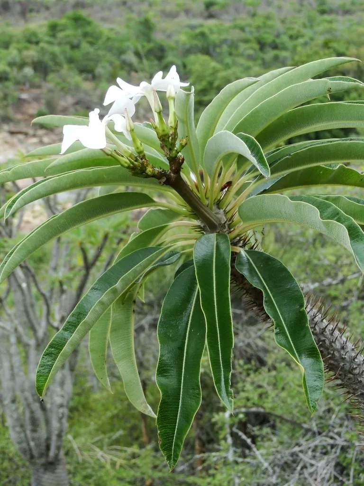

多肉植物 · 植物界
棒槌树 Pachypodium lamerei

夹竹桃科棒槌树属多肉乔木，茎干粗壮、密生尖刺，顶生叶片，形似棒槌，原产马达加斯加，是著名的观茎植物。
- 分类
- 门被子植物门纲木兰纲目龙胆目科夹竹桃科属棒槌树属
- 栖息环境
- 马达加斯加南部干旱地区的石质坡地与灌丛
- 地理分布
- 原产马达加斯加南部，世界各地盆栽观赏
- 保护级别
- 暂无评估；CITES 附录Ⅱ
物种志
棒槌树为夹竹桃科棒槌树属的落叶肉质乔木，野生植株高可达 4–6 米，茎干粗壮、银灰色，表面密生三刺一组的尖刺，形似棒槌。叶片倒卵形，长 15–30 厘米，簇生于茎顶，呈螺旋状排列，旱季脱落。花白色，中心黄色，漏斗形，花期夏季；果实为蓇葖果。
棒槌树原产马达加斯加南部的干旱地区，喜阳光充足、温暖干燥和通风良好的环境，耐旱、怕积水和低温。它茎干粗壮、密生尖刺，顶生叶片，株形奇特，是著名的观茎多肉植物。栽培用排水良好的颗粒土，生长期干透浇透，冬季保持 12℃ 以上并控水；繁殖以播种和扦插为主。植株汁液有毒，修剪时应戴手套。
形态与习性
- 株高野生可达 4–6 米
- 茎干粗壮、银灰色，形似棒槌
- 刺三刺一组，密生茎表
- 花期夏季，花白色、中心黄色
- 光照喜充足阳光
- 水分耐旱，干透浇透
- 繁殖播种、扦插
- 注意汁液有毒，修剪戴手套
趣味知识
- 棒槌树的茎干粗壮、密生尖刺，形似棒槌，因此得名。
- 它原产马达加斯加，旱季落叶，靠粗壮的茎干储水度旱。
- 棒槌树的汁液有毒，修剪和搬动时应戴手套。